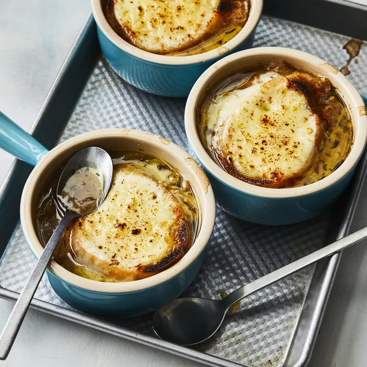

French Onion Soup

French onion soup, or soupe à l'oignon gratinée, is a classic French dish made with caramelized onions and beef stock or broth.
The soup is topped with bread and cheese, then gratinéed to rich, gooey perfection.
It's traditionally served in a ramekin or a ceramic crock with a handle.
Ingredients
- ½ cup unsalted butter
- 2 tablespoons olive oil
- 4 cups sliced onions
- 5 cups beef broth
- 2 tablespoons dry sherry
- 1 teaspoon dried thyme
- 1 pinch salt and pepper to taste
- 4 slices French bread
- 4 slices provolone cheese
- 2 slices Swiss cheese, diced
- ¼ cup grated Parmesan cheese
Steps
- Melt butter with olive oil in an 8-quart stock pot over medium heat.
Add onions and continually stir until tender and translucent.
Do not brown the onions.
- Add beef broth, sherry, and thyme. Season with salt and pepper.
Let simmer for 30 minutes.
- Meanwhile, preheat the oven's broiler.
- Ladle soup into oven-safe serving bowls and place one slice of bread on top of each (bread may be broken into pieces if you prefer).
Layer each slice of bread with a slice of provolone, 1/2 slice diced Swiss and 1 tablespoon Parmesan cheese.
- Place bowls on a cookie sheet and broil in the preheated oven until cheese bubbles and browns slightly, 2 to 3 minutes.